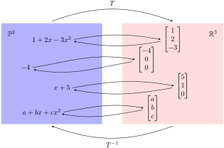

Section 9.3 Extra Topic: Isomorphic Vector Spaces
A vector space is defined as a collection of objects together with operations of addition and scalar multiplication that follow certain rules
Definition 9.1.4. In our study of abstract vector spaces, we have encountered spaces that appeared very different from each other. Just how different are they? Does
\(\mathbb{L}\text{,}\) a vector space whose elements have the form
\(mx+b\text{,}\) have anything in common with
\(\R^2\text{?}\) Is
\(\mathbb{P}^3\) fundamentally different from
\(\mathbb{M}_{2,2}\text{?}\)
To answer these questions, we will have to look beyond the superficial appearance of the elements of a vector space and delve into its structure. The ``structure" of a vector space is determined by how the elements of the vector space interact with each other through the operations of addition and scalar multiplication.
Let us return to the question of what \(\mathbb{L}\) has in common with \(\R^2\text{.}\) Consider two typical elements of \(\mathbb{L}\text{:}\)
\begin{equation}
mx+b\quad\text{and}\quad qx+c.\tag{9.3.1}
\end{equation}
We can add these elements together
\begin{equation}
(mx+b)+(qx+c)=(m+q)x+(b+c)\tag{9.3.2}
\end{equation}
or multiply each one by a scalar
\begin{equation}
k(mx+b)=kmx+kb\quad\text{and}\quad t(qx+c)=tqx+tc.\tag{9.3.3}
\end{equation}
But suppose we get tired of having to write
\(x\) down every time. Could we leave off the
\(x\) and represent
\(mx+b\) by
\([m,b]\text{?}\) If we do this, expressions
(9.3.1),
(9.3.2) and
(9.3.3) would be mimicked by the following expressions involving vectors of
\(\R^2\text{:}\)
\begin{equation*}
\begin{bmatrix}m\\b\end{bmatrix}\quad\text{and}\quad\begin{bmatrix}q\\c\end{bmatrix},
\end{equation*}
\begin{equation*}
\begin{bmatrix}m\\b\end{bmatrix}+\begin{bmatrix}q\\c\end{bmatrix}=\begin{bmatrix}m+q\\b+c\end{bmatrix},
\end{equation*}
\begin{equation*}
k\begin{bmatrix}m\\b\end{bmatrix}=\begin{bmatrix}km\\kb\end{bmatrix}\quad\text{and}\quad t\begin{bmatrix}q\\c\end{bmatrix}=\begin{bmatrix}tq\\tc\end{bmatrix}.
\end{equation*}
It appears that we should be able to switch back and forth between \(\mathbb{L}\) and \(\R^2\text{,}\) translating questions and answers from one space to the other and back again.
We begin to suspect that \(\mathbb{L}\) and \(\R^2\) have the same ``structure". Spaces such as \(\mathbb{L}\) and \(\R^2\) are said to be isomorphic. This term is derived from the Greek ``iso," meaning ``same," and ``morphe," meaning ``form." The term captures the idea that isomorphic vector spaces have the same structure. Before we present a precise definition of the term, we need to better understand what we mean by ``switching back and forth" between spaces. The following Exploration will help us formulate this vague notion in terms of transformations.
Exploration 9.3.1.
Recall that the set of all polynomials of degree \(2\) or less, together with polynomial addition and scalar multiplication, is a vector space, denoted by \(\mathbb{P}^2\text{.}\) Let \(\mathcal{B}=\{1, x, x^2\}\text{.}\) You should do a quick mental check that \(\mathcal{B}\) is a basis of \(\mathbb{P}^2\text{.}\) Define a transformation \(T:\mathbb{P}^2\rightarrow \R^3\) by
\begin{equation*}
T(a+bx+cx^2)=\begin{bmatrix}a\\b\\c\end{bmatrix}.
\end{equation*}
You may have recognized \(T\) as the transformation that maps each element of \(\mathbb{P}^2\) to its coordinate vector with respect to the ordered basis \(\mathcal{B}\text{.}\) Transformation \(T\) has several nice properties:
Our goal is to investigate and illustrate what these properties mean for transformation \(T\text{,}\) and for the relationship between \(\mathbb{P}^2\) and \(\R^3\text{.}\) First, observe that \(T\) being one-to-one and onto establishes ``pairings" between elements of \(\mathbb{P}^2\) and \(\R^3\) in such a way that every element of one vector space is uniquely matched with exactly one element of the other vector space, as shown in the diagram below.

Second, the fact that \(T\) (and \(T^{-1}\)) are linear will allow us to translate questions related to linear combinations in one of the vector spaces to equivalent questions in the other vector space, then translate answers back to the original vector space. To make this statement concrete, consider the following problem:
Let
\begin{equation*}
p_1(x)=3-x+2x^2\quad\text{and}\quad p_2(x)=-1+3x+x^2.
\end{equation*}
Find \(p_1(x)+p_2(x)\text{.}\) The answer is, of course
\begin{equation*}
p_1(x)+p_2(x)=2+2x+3x^2.
\end{equation*}
Easy. But suppose for a moment that we did not know how to add polynomials, or that we found the process extremely difficult, or maybe instead of \(\mathbb{P}^2\) we had another vector space that we did not want to deal with. It turns out that we can use \(T\) and \(T^{-1}\) to answer the addition question. We will start by applying \(T\) to \(p_1(x)\) and \(p_2(x)\) separately:
\begin{equation*}
T(p_1(x))=\begin{bmatrix}3\\-1\\2\end{bmatrix},\quad T(p_2(x))=\begin{bmatrix}-1\\3\\1\end{bmatrix}.
\end{equation*}
Next, we add the images of \(p_1(x)\) and \(p_2(x)\) in \(\R^3\text{:}\)
\begin{equation*}
\begin{bmatrix}3\\-1\\2\end{bmatrix}+\begin{bmatrix}-1\\3\\1\end{bmatrix}=\begin{bmatrix}2\\2\\3\end{bmatrix}.
\end{equation*}
This maneuver allows us to avoid the addition question in \(\mathbb{P}^2\) and answer the question in \(\R^3\) instead. We use \(T^{-1}\) to translate the answer back to \(\mathbb{P}^2\text{:}\)
\begin{equation*}
T^{-1}\left(\begin{bmatrix}2\\2\\3\end{bmatrix}\right)=2+2x+3x^2.
\end{equation*}
All of this relies on linearity. Here is a formal justification for the process. Try to spot where linearity is used.
\begin{align}
p_1(x)+p_2(x)\amp =(3-x+2x^2)+(-1+3x+x^2) \tag{9.3.4}\\
\amp =T^{-1}\left(\begin{bmatrix}3\\-1\\2\end{bmatrix}\right)+T^{-1}\left(\begin{bmatrix}-1\\3\\1\end{bmatrix}\right) \tag{9.3.5}\\
\amp =T^{-1}\left(\begin{bmatrix}3\\-1\\2\end{bmatrix}+\begin{bmatrix}-1\\3\\1\end{bmatrix}\right) \tag{9.3.6}\\
\amp =T^{-1}\left(\begin{bmatrix}2\\2\\3\end{bmatrix}\right) \tag{9.3.7}\\
\amp =2+2x+3x^2 \tag{9.3.8}
\end{align}
Problem 9.3.1.
Which transition in the above calculation requires linearity?
Invertible linear transformations, such as transformation
\(T\) of
Exploration 9.3.1, are useful because they preserve the structure of interactions between elements as we move back and forth between two vector spaces, allowing us to answer questions about one vector space in a different vector space. In particular, any question related to linear combinations can be addressed in this fashion. This includes questions concerning linear independence, span, basis and dimension.
Definition 9.3.2.
Let \(V\) and \(W\) be vector spaces. If there exists an invertible linear transformation \(T:V\rightarrow W\) we say that \(V\) and \(W\) are isomorphic and write \(V\cong W\text{.}\)
The invertible linear transformation \(T\) is called an isomorphism.
It is worth pointing out that if \(T:V\rightarrow W\) is an isomorphism, then \(T^{-1}:W\rightarrow V\text{,}\) being linear and invertible, is also an isomorphism.
While all this has been fairly abstract, previous examples do have this content attached to them.
Example 9.3.3.
Our earlier discussion suggests that
\(\mathbb{L}\cong\R^2\text{.}\) We postpone the proof until
Theorem 9.3.6.
Example 9.3.4.
Example 9.3.5.
Show that \(\mathbb{M}_{2,2}\) and \(\mathbb{P}^3\) are isomorphic.
Answer.
We will start by finding a plausible candidate for an isomorphism. Define \(T:\mathbb{M}_{2,2}\rightarrow \mathbb{P}^3\) by
\begin{equation*}
T\left(\begin{bmatrix}a\amp b\\c\amp d\end{bmatrix}\right)=a+bx+cx^2+dx^3.
\end{equation*}
We will first show that \(T\) is a linear transformation, then verify that \(T\) is invertible.
\begin{align*}
T\left(k\begin{bmatrix}a\amp b\\c\amp d\end{bmatrix}\right)\amp =T\left(\begin{bmatrix}ka\amp kb\\kc\amp kd\end{bmatrix}\right) \\
\amp =ka+kbx+kcx^2+kdx^3=k(a+bx+cx^2+dx^3) \\
\amp =kT\left(\begin{bmatrix}a\amp b\\c\amp d\end{bmatrix}\right)
\end{align*}
and
\begin{align*}
T\left(\begin{bmatrix}a\amp b\\c\amp d\end{bmatrix}+\begin{bmatrix}m\amp n\\p\amp q\end{bmatrix}\right)\amp =T\left(\begin{bmatrix}a+m\amp b+n\\c+p\amp d+q\end{bmatrix}\right) \\
\amp =(a+m)+(b+n)x+(c+p)x^2+(d+q)x^3 \\
\amp =(a+bx+cx^2+dx^3)+(m+nx+px^2+qx^3) \\
\amp =T\left(\begin{bmatrix}a\amp b\\c\amp d\end{bmatrix}\right)+T\left(\begin{bmatrix}m\amp n\\p\amp q\end{bmatrix}\right)
\end{align*}
We can show that \(T\) is one-to-one and onto, and therefore has an inverse. We can also observe directly that \(T^{-1}\) is given by
\begin{equation*}
T^{-1}(a+bx+cx^2+dx^3)=\begin{bmatrix}a\amp b\\c\amp d\end{bmatrix}.
\end{equation*}
We conclude that \(T\) is an isomorphism, and \(\mathbb{M}_{2,2}\cong\mathbb{P}^3\text{.}\)
Isomorphism
\(T\) in
Example 9.3.5 establishes the fact that
\(\mathbb{M}_{2,2}\cong\mathbb{P}^3\text{.}\) However, there is nothing special about
\(T\text{,}\) as there are many other isomorphisms from
\(\mathbb{M}_{2,2}\) to
\(\mathbb{P}^3\text{.}\) Just for fun, try to verify that each of the following is an isomorphism.
\begin{equation}
\tau_1:\mathbb{M}_{2,2}\rightarrow\mathbb{P}^3; \quad \ \tau_1\left(\begin{bmatrix}a\amp b\\c\amp d\end{bmatrix}\right)=a-bx-cx^2+dx^3,,\tag{9.3.9}
\end{equation}
\begin{equation}
\tau_2:\mathbb{M}_{2,2}\rightarrow\mathbb{P}^3; \quad \ \tau_2\left(\begin{bmatrix}a\amp b\\c\amp d\end{bmatrix}\right)=a+(a+c)x+(b-c)x^2+dx^3.\tag{9.3.10}
\end{equation}
Subsection 9.3.1 The Coordinate Vector Isomorphism
In
Exploration 9.3.1 we made good use of a transformation that maps every element of
\(\mathbb{P}^2\) to its coordinate vector in
\(\R^3\text{.}\) We observed that this transformation is linear and invertible, therefore it is an isomorphism. The following example generalizes this result.
Theorem 9.3.6.
Let \(V\) be an \(n\)-dimensional vector space, and let \(\mathcal{B}\) be an ordered basis for \(V\text{.}\) Then \(T:V\rightarrow \R^n\) given by \(T(\mathbf{v})=[\mathbf{v}]_{\mathcal{B}}\) is an isomorphism.
Proof.
Subsection 9.3.2 Properties of Isomorphic Vector Spaces and Isomorphisms
In this section we will illustrate properties of isomorphisms with specific examples. Formal proofs of properties will be presented in the next section.
Exploration 9.3.2.
In
Exploration 9.3.1 we defined a transformation
\(T:\mathbb{P}^2\rightarrow \R^3\) by
\begin{equation*}
T(a+bx+cx^2)=\begin{bmatrix}a\\b\\c\end{bmatrix}.
\end{equation*}
We later observed that \(T\) is an isomorphism. We will now examine the effect of \(T\) on two different bases of \(\mathbb{P}^2\text{.}\) Let
\begin{equation*}
\mathcal{B}_1=\{1, x, x^2\}\quad \text{and} \quad \mathcal{B}_2=\{x, 1+x, x+x^2\}.
\end{equation*}
(Recall that
\(\mathcal{B}_2\) is a basis of
\(\mathbb{P}^2\) by
Example 9.1.37). First,
\begin{equation*}
T(\mathcal{B}_1)=\{T(1), T(x), T(x^2)\}=\left\{\begin{bmatrix}1\\0\\0\end{bmatrix}, \begin{bmatrix}0\\1\\0\end{bmatrix}, \begin{bmatrix}0\\0\\1\end{bmatrix}\right\}.
\end{equation*}
Clearly, the images of the elements of \(\mathcal{B}_1\) form a basis of \(\R^3\text{.}\) Now we consider \(\mathcal{B}_2\text{.}\)
\begin{equation*}
T(\mathcal{B}_2)=\{T(x), T(1+x), T(x+x^2)\}=\left\{\begin{bmatrix}0\\1\\0\end{bmatrix}, \begin{bmatrix}1\\1\\0\end{bmatrix}, \begin{bmatrix}0\\1\\1\end{bmatrix}\right\}.
\end{equation*}
It is easy to verify that
\begin{equation*}
\begin{bmatrix}0\\1\\0\end{bmatrix}, \quad \begin{bmatrix}1\\1\\0\end{bmatrix}, \quad \begin{bmatrix}0\\1\\1\end{bmatrix}
\end{equation*}
are linearly independent and span \(\R^3\text{.}\) Therefore the images of the elements of \(\mathcal{B}_2\) from a basis of \(\R^3\text{.}\)
We can try any number of bases of \(\mathbb{P}^2\) and we will find that the image of each basis of \(\mathbb{P}^2\) is a basis of \(\R^3\text{.}\) In general, we have the following result:
Fact 9.3.7.
An isomorphism maps a basis of the domain to a basis of the codomain. (We will state this result more formally as Theorem
Theorem 9.3.12 in the next section.)
Isomorphisms preserve bases, but more generally, they preserve linear independence.
Fact 9.3.8.
If \(T:V\rightarrow W\) is an isomorphism, then the subset \(\{\mathbf{v_1}, \mathbf{v}_2,\ldots ,\mathbf{v}_n\}\) of \(V\) is linearly independent if and only if
\begin{equation*}
\{T(\mathbf{v_1}), T(\mathbf{v}_2),\ldots ,T(\mathbf{v}_n)\}
\end{equation*}
is linearly independent in
\(W\text{.}\) We will state and prove this result as
Theorem 9.3.13.
The example below flags up the idea that there is little differences between the abstract case and the concrete one in \(\R^n \text{.}\)
Example 9.3.9.
Let \(V\) be a vector space, and let \(\mathcal{B}=\{\mathbf{v}_1, \mathbf{v}_2, \mathbf{v}_3, \mathbf{v}_4\}\) be an ordered basis of \(V\text{.}\) Let
\begin{align*}
\mathbf{w}_1 \amp = 2\mathbf{v}_1+3\mathbf{v}_2-5\mathbf{v}_3-2\mathbf{v}_4, \\
\mathbf{w}_2 \amp = -\mathbf{v}_1+4\mathbf{v}_2-3\mathbf{v}_3+\mathbf{v}_4, \\
\mathbf{w}_3 \amp = -3\mathbf{v}_1-\mathbf{v}_2+4\mathbf{v}_3+3\mathbf{v}_4.
\end{align*}
Are \(\mathbf{w}_1, \mathbf{w}_2, \mathbf{w}_3\) linearly independent?
Answer.
We could approach this question head-on by considering the vector equation
\begin{equation*}
a\mathbf{w}_1+b\mathbf{w}_2+c\mathbf{w}_3=\mathbf{0}
\end{equation*}
to see if the only solution is the trivial one (see
Exercise 9.3.5.3). Instead, we will use isomorphisms.
Observe that we do not know anything about \(V\) aside from the fact that it has four basis vectors. Vectors \(\mathbf{w}_1\text{,}\) \(\mathbf{w}_2\text{,}\) \(\mathbf{w}_3\) are given in terms of these basis vectors. This should give us an idea for constructing an isomorphism between \(V\) and \(\R^4\text{.}\) Consider \(T:V\rightarrow\R^4\) such that \(T(\mathbf{w})=[\mathbf{w}]_{\mathcal{B}}\text{.}\) Then
\begin{equation*}
T(\mathbf{w}_1)=[\mathbf{w}_1]_{\mathcal{B}}=\begin{bmatrix}2\\3\\-5\\-2\end{bmatrix},\quad T(\mathbf{w}_2)=[\mathbf{w}_2]_{\mathcal{B}}=\begin{bmatrix}-1\\4\\-3\\1\end{bmatrix} ,
\end{equation*}
\begin{equation*}
T(\mathbf{w}_3)=[\mathbf{w}_3]_{\mathcal{B}}=\begin{bmatrix}-3\\-1\\4\\3\end{bmatrix}.
\end{equation*}
By
Theorem 9.3.6,
\(T\) is an isomorphism. This means that
\(\mathbf{w}_1\text{,}\) \(\mathbf{w}_2\text{,}\) \(\mathbf{w}_3\) are linearly independent if and only if their coordinate vectors are linearly independent. There are multiple ways of determining whether
\begin{equation*}
\begin{bmatrix}2\\3\\-5\\-2\end{bmatrix}, \begin{bmatrix}-1\\4\\-3\\1\end{bmatrix}, \begin{bmatrix}-3\\-1\\4\\3\end{bmatrix}
\end{equation*}
are linearly independent. One way is to find the reduced row echelon form of
\begin{equation*}
\begin{bmatrix}2\amp -1\amp -3\\3\amp 4\amp -1\\-5\amp -3\amp 4\\-2\amp 1\amp 3\end{bmatrix}
\end{equation*}
The matrix reduces as follows:
\begin{equation*}
\begin{bmatrix}2\amp -1\amp -3\\3\amp 4\amp -1\\-5\amp -3\amp 4\\-2\amp 1\amp 3\end{bmatrix}\rightsquigarrow\begin{bmatrix}1\amp 0\amp -13/11\\0\amp 1\amp 7/11\\0\amp 0\amp 0\\0\amp 0\amp 0\end{bmatrix}
\end{equation*}
We see that the rank of the matrix is \(2\text{.}\) We conclude that the column vectors are not linearly independent. Thus, the vectors \(\mathbf{w}_1\text{,}\) \(\mathbf{w}_2\) and \(\mathbf{w}_3\) are not linearly independent.
Subsection 9.3.3 Proofs of Isomorphism Properties
Recall that a transformation \(T\) is one-to-one provided that
\begin{equation*}
T(\mathbf{v}_1)=T(\mathbf{v}_2)
\end{equation*}
implies that
\begin{equation*}
\mathbf{v}_1=\mathbf{v}_2.
\end{equation*}
We will show that images of linearly independent vectors under one-to-one linear transformations are linearly independent.
Theorem 9.3.10.
Let \(T:V\rightarrow W\) be a one-to-one linear transformation. Suppose \(\{\mathbf{v}_1,\ldots,\mathbf{v}_n\}\) is linearly independent in \(V\text{.}\) Then \(\{T(\mathbf{v}_1),\ldots,T(\mathbf{v}_n)\}\) is linearly independent in \(W\text{.}\)
Proof.
Suppose \(a_1, \ldots, a_n\) satisfy
\begin{equation}
a_1T(\mathbf{v}_1)+\ldots +a_nT(\mathbf{v}_n)=\mathbf{0}.\tag{9.3.11}
\end{equation}
We will show that for each \(i\text{,}\) we must have \(a_i=0\text{.}\) By linearity, we have:
\begin{align*}
\mathbf{0}\amp =a_1T(\mathbf{v}_1)+\ldots +a_nT(\mathbf{v}_n) \\
\amp =T(a_1\mathbf{v}_1)+\ldots +T(a_n\mathbf{v}_n) \\
\amp =T(a_1\mathbf{v}_1+\ldots +a_n\mathbf{v}_n).
\end{align*}
\begin{equation*}
T(a_1\mathbf{v}_1+\ldots +a_n\mathbf{v}_n)=T(\mathbf{0}).
\end{equation*}
Because \(T\) is one-to-one, we conclude that
\begin{equation}
a_1\mathbf{v}_1+\ldots +a_n\mathbf{v}_n=\mathbf{0}.\tag{9.3.12}
\end{equation}
By assumption, \(\{\mathbf{v}_1,\ldots,\mathbf{v}_n\}\) is linearly independent. Therefore \(a_i=0\) for \(1\leq i\leq n\text{.}\)
Recall that a transformation \(T\) is onto provided that every vector of the codomain of \(T\) is the image of some vector in the domain of \(T\text{.}\) We will show that an onto linear transformation maps sets that span the domain to sets that span the codomain.
Theorem 9.3.11.
Let \(T:V\rightarrow W\) be an onto linear transformation. Suppose \(V=\mbox{span}(\mathbf{v}_1,\ldots ,\mathbf{v}_n)\text{.}\) Then \(W=\mbox{span}(T(\mathbf{v}_1),\ldots ,T(\mathbf{v}_n))\text{.}\)
Proof.
Suppose \(\mathbf{w}\) is an element of \(W\text{.}\) To show that \(\{T(\mathbf{v}_1),\ldots ,T(\mathbf{v}_n)\}\) spans \(W\text{,}\) we will express \(\mathbf{w}\) as a linear combination of \(T(\mathbf{v}_1),\ldots ,T(\mathbf{v}_n)\text{.}\)
Because \(T\) is onto, \(\mathbf{w}=T(\mathbf{v})\) for some \(\mathbf{v}\) in \(V\text{.}\) But \(V=\mbox{span}(\mathbf{v}_1,\ldots ,\mathbf{v}_n)\text{.}\) Therefore,
\begin{equation*}
\mathbf{v}=a_1\mathbf{v}_1+\ldots +a_n\mathbf{v}_n
\end{equation*}
for some scalar coefficients \(a_1,\ldots ,a_n\text{.}\) By linearity, we have:
\begin{align*}
\mathbf{w} \amp =T(\mathbf{v}) \\
\amp =T(a_1\mathbf{v}_1+\ldots +a_n\mathbf{v}_n) \\
\amp =a_1T(\mathbf{v}_1)+\ldots +a_nT(\mathbf{v}_n).
\end{align*}
Thus, \(\mathbf{w}\) is in the span of \(T(\mathbf{v}_1),\ldots ,T(\mathbf{v}_n)\text{.}\)
Theorem 9.3.12.
Let \(T:V\rightarrow W\) be an isomorphism. Suppose \(\mathcal{B}_V=\{\mathbf{v}_1,\ldots ,\mathbf{v}_n\}\) is a basis for \(V\text{.}\) Then
\begin{equation*}
\{T(\mathbf{v}_1),\ldots ,T(\mathbf{v}_n)\}
\end{equation*}
is a basis for \(W\text{.}\)
Proof.
Theorem 9.3.13.
Suppose \(T:V\rightarrow W\) is an isomorphism, then the subset \(\{\mathbf{v_1}, \mathbf{v}_2,\ldots ,\mathbf{v}_n\}\) ’ of \(V\) is linearly independent if and only if
\begin{equation*}
\{T(\mathbf{v_1}), T(\mathbf{v}_2),\ldots ,T(\mathbf{v}_n)\}
\end{equation*}
is linearly independent in \(W\text{.}\)
Proof.
We have already proved one direction of this this ``if and only if" statement as
Theorem 9.3.10.
To prove the other direction, suppose that
\(T(\mathbf{v_1}), T(\mathbf{v}_2),\ldots ,T(\mathbf{v}_n)\) are linearly independent vectors in
\(W\text{.}\) We need to show that this implies that
\(\mathbf{v_1}, \mathbf{v}_2,\ldots ,\mathbf{v}_n\) are linearly independent in
\(V\text{.}\) Observe that if
\(T\) is an isomorphism, then
\(T^{-1}:W\rightarrow V\) is also an isomorphism. Thus, by
Theorem 9.3.10,
\begin{equation*}
T^{-1}(T(\mathbf{v_1})), T^{-1}(T(\mathbf{v}_2)),\ldots ,T^{-1}(T(\mathbf{v}_n))
\end{equation*}
are linearly independent. But this means that \(\mathbf{v_1}, \mathbf{v}_2,\ldots ,\mathbf{v}_n\) are linearly independent.
Theorem 9.3.14.
Let \(U\text{,}\) \(V\) and \(W\) be vector spaces. Suppose \(T_1:U\rightarrow V\) and \(T_2:V\rightarrow W\) are isomorphisms. Then \(T_2\circ T_1:U\rightarrow W\) is an isomorphism.
Proof.
Subsection 9.3.4 Finite-dimensional Vector Spaces
Theorem 9.3.15.
Let \(V\) and \(W\) be finite-dimensional vector spaces. Then
\begin{equation*}
V\cong W\quad\text{if and only if}\quad \mbox{dim}(V)=\mbox{dim}(W).
\end{equation*}
Proof.
First, assume that \(V\cong W\text{.}\) Then there exists an isomorphism \(T:V\rightarrow W\text{.}\) Suppose \(\mbox{dim}(V)=n\) and let
\begin{equation*}
\{\mathbf{v}_1,\mathbf{v}_2,\ldots ,\mathbf{v}_n\}
\end{equation*}
\begin{equation*}
\{T(\mathbf{v}_1),\ldots ,T(\mathbf{v}_n)\}
\end{equation*}
is a basis for \(W\text{.}\) Therefore \(\mbox{dim}(W)=n\text{.}\)
Conversely, suppose \(\mbox{dim}(V)=\mbox{dim}(W)=n\text{,}\) and let
\begin{equation*}
\mathcal{B}=\{\mathbf{v}_1,\mathbf{v}_2,\ldots ,\mathbf{v}_n\},\quad
\mathcal{C}=\{\mathbf{w}_1,\mathbf{w}_2,\ldots ,\mathbf{w}_n\}
\end{equation*}
be bases for \(V\) and \(W\text{,}\) respectively. Define a linear transformation \(T:V\rightarrow W\) by \(T(\mathbf{v}_i)=\mathbf{w}_i\) for \(1\leq i\leq n\text{.}\) To show that \(T\) is an isomorphism, we need to prove that \(T\) is one-to-one and onto. Suppose \(T(\mathbf{u}_1)=T(\mathbf{u}_2)\) for some vectors \(\mathbf{u}_1\text{,}\) \(\mathbf{u}_2\) in \(V\text{.}\) We know that
\begin{equation*}
\mathbf{u}_1=a_1\mathbf{v}_1+\ldots +a_n\mathbf{v}_n,
\end{equation*}
\begin{equation*}
\mathbf{u}_2=b_1\mathbf{v}_1+\ldots +b_n\mathbf{v}_n,
\end{equation*}
for some scalars \(a_i\)’s and \(b_i\)’s. Thus,
\begin{equation*}
T(a_1\mathbf{v}_1+\ldots +a_n\mathbf{v}_n)=T(b_1\mathbf{v}_1+\ldots +b_n\mathbf{v}_n)
\end{equation*}
By linearity of \(T\text{,}\)
\begin{equation*}
a_1\mathbf{w}_1+\ldots +a_n\mathbf{w}_n=b_1\mathbf{w}_1+\ldots +b_n\mathbf{w}_n
\end{equation*}
\begin{equation*}
(a_1-b_1)\mathbf{w}_1+\ldots +(a_n-b_n)\mathbf{w}_n=\mathbf{0}
\end{equation*}
But \(\mathbf{w}_1,\mathbf{w}_2,\ldots ,\mathbf{w}_n\) are linearly independent, so \(a_i-b_i=0\) for all \(1\leq i\leq n\text{.}\) Therefore \(a_i=b_i\) for all \(1\leq i\leq n\text{.}\) We conclude that \(\mathbf{u}_1=\mathbf{u}_2\text{.}\) We now show that \(T\) is onto. Suppose that \(\mathbf{w}\) is an element of \(W\text{.}\) Then \(\mathbf{w}=c_1\mathbf{w}_1+\ldots +c_n\mathbf{w}_n\) for some scalars \(c_i\)’s. But then
\begin{equation*}
\mathbf{w}=c_1T(\mathbf{v}_1)+\ldots +c_nT(\mathbf{v}_n)=T(c_1\mathbf{v}_1+\ldots +c_n\mathbf{v}_n)
\end{equation*}
We conclude that \(\mathbf{w}\) is an image of an element of \(V\text{,}\) so \(T\) is onto.
From this theorem follows an important corollary that shows why we spent so much time trying to understand \(\R^n\) in this course.
Corollary 9.3.16.
Every \(n\)-dimensional vector space is isomorphic to \(\R^n\text{.}\)
The corollary in examples makes it less surprising:
Example 9.3.17.
The span of any two linearly independent vectors in \(\R^3\) is isomorphic to \(\R^2\text{.}\)
Example 9.3.18.
\begin{equation*}
\mathbb{P}^2\ncong \R^2.
\end{equation*}
Answer.
Recall that \(\mbox{dim}(\mathbb{P}^2)=3\text{.}\) Since \(\mbox{dim}(\mathbb{P}^2)=3\neq 2=\mbox{dim}(\R^2)\text{,}\) we conclude that \(\mathbb{P}^2\) is not isomorphic to \(\R^2\text{.}\)
Exercises 9.3.5 Exercises
1.
2.
Verify that
\begin{equation*}
\tau_1:\mathbb{M}_{2,2}\rightarrow\mathbb{P}^3
\end{equation*}
given by
\begin{equation*}
\tau_1\left(\begin{bmatrix}a\amp b\\c\amp d\end{bmatrix}\right)=a-bx-cx^2+dx^3
\end{equation*}
3.
4.
Let
\begin{equation*}
\mathcal{S}=\left\{\begin{bmatrix}1\amp -3\\-2\amp 2\end{bmatrix}, \begin{bmatrix}4\amp -2\\1\amp 5\end{bmatrix}, \begin{bmatrix}5\amp 5\\8\amp 4\end{bmatrix}\right\}.
\end{equation*}
Is \(\mathcal{S}\) linearly independent in \(\mathbb{M}_{2,2}\text{?}\)
5.
Let
\begin{equation*}
\mathcal{S}=\left\{\begin{bmatrix}1\amp 2\\3\amp 4\end{bmatrix}, \begin{bmatrix}5\amp 6\\7\amp 8\end{bmatrix}, \begin{bmatrix}9\amp 10\\11\amp 12\end{bmatrix}, \begin{bmatrix}13\amp 14\\15\amp 16\end{bmatrix}\right\}
\end{equation*}
Is \(\mathcal{S}\) a basis for \(\mathbb{M}_{2,2}\text{?}\)
6.
7.
Let \(V\) be a vector space, and suppose \(\mathcal{B}=\{\mathbf{v}_1, \mathbf{v}_2, \mathbf{v}_3, \mathbf{v}_4, \mathbf{v}_5\}\) is a basis for \(V\text{.}\) What can we conclude about \(V\text{?}\) Check ALL that apply.
We cannot conclude anything about \(V\) because we do not know what \(V\) is.
-
\(V\cong \R^5\text{.}\)
-
\(V\cong \mathbb{P}^5\text{.}\)
-
\(V\cong \R^4\text{.}\)
-
\(V\cong \mathbb{P}^4 \text{.}\)
-
\(V\cong \mathbb{M}_{5,5} \)-
-
8.
Which of the followng statements are true? Check ALL that apply.
\(\mathbb{M}_{3,3} \cong \R^6 \text{.}\)
-
\(\mathbb{M}_{3,3}\cong \R^9\text{.}\)
-
\(\mathbb{M}_{4,4} \cong \mathbb{P}^{16} \text{.}\)
-
\(\mathbb{M}_{4,4} \cong \mathbb{P}^{15}\text{.}\)
-
\(\mathbb{L} \cong \R^2 \text{.}\)
-
9.
Verify that
\(T:V\rightarrow \R^n\) of
Theorem 9.3.6 is an isomorphism.
10.
Prove that the composition of two isomorphisms is an isomorphism (see also
Theorem 9.3.14).
11.
Prove that a linear transformation \(T:V\rightarrow W\) is one-to-one if and only if \(\text{ker}(T)=\{\mathbf{0}\}\text{.}\)